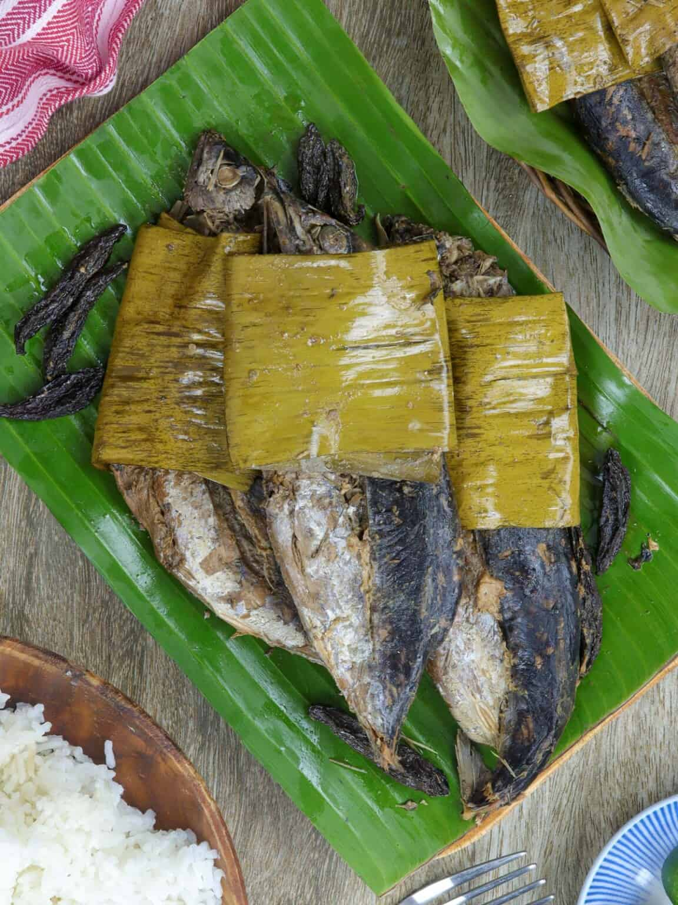

Sinaing na Tulingan Recipe

Ingredients:
- 4 pieces of tulingan (bullet tuna)
- 8 to 10 pieces of dried or fresh bilimbi (kamias)
- 4 to 6 cups of water
- 4 to 5 tablespoons of coarse sea salt or rock salt
- Optional: Banana leaves for wrapping
Procedure:
- Clean and Prepare:
- Clean the tulingan by removing the scales and innards. Rinse thoroughly with water, then pat dry with a clean towel.
- Season the Fish:
- Sprinkle the tulingan with coarse sea salt or rock salt, ensuring all sides are well-seasoned. Set aside for about 15 minutes.
- Wrap with Banana Leaves (optional):
- If desired, wrap the seasoned tulingan in banana leaves to enhance the flavor and aroma. Secure the banana leaf wrapping with toothpicks or kitchen twine.
- Cook the Singing an Tulingan:
- In a wide pan or pot, arrange the tulingan and bilimbi (kamias) slices.
- Add enough water to partially submerge the fish. Cover the pan or pot.
- Place the pan or pot over medium heat and let it simmer for about 15 to 20 minutes, or until the fish is cooked through and tender.
- Adjust the seasoning by adding more salt if needed.
- Serve and Enjoy:
- Transfer the Singing an Tulingan to a serving dish.
- Enjoy it while hot with steamed rice and your favorite dipping sauce.